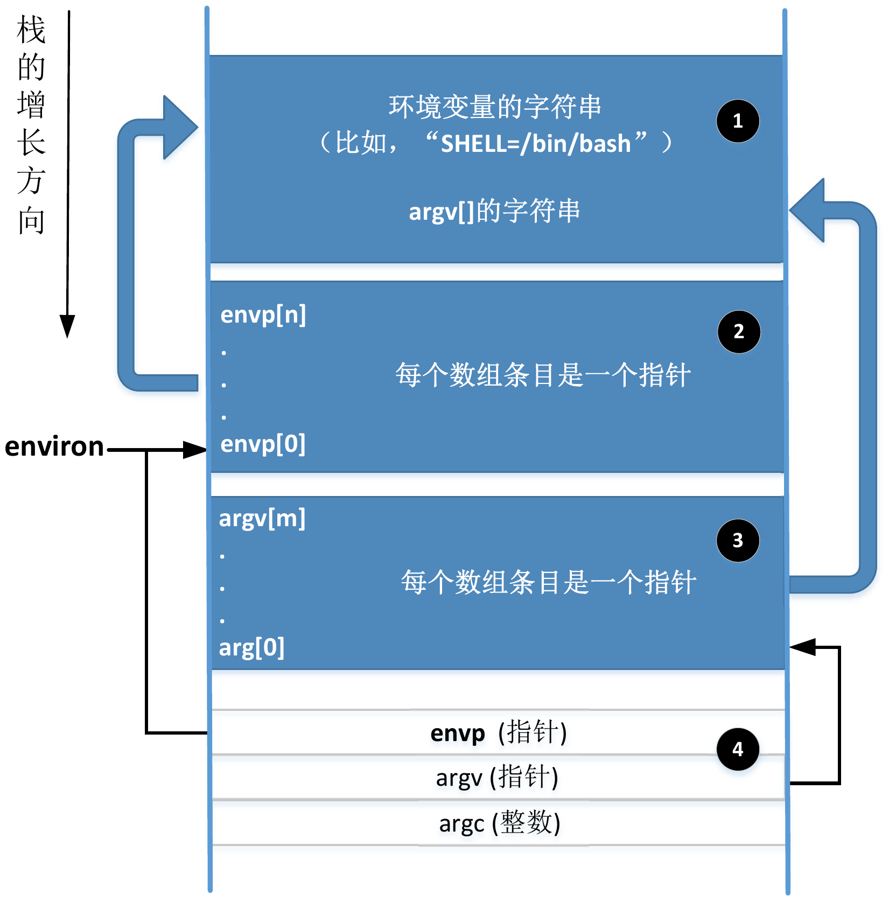
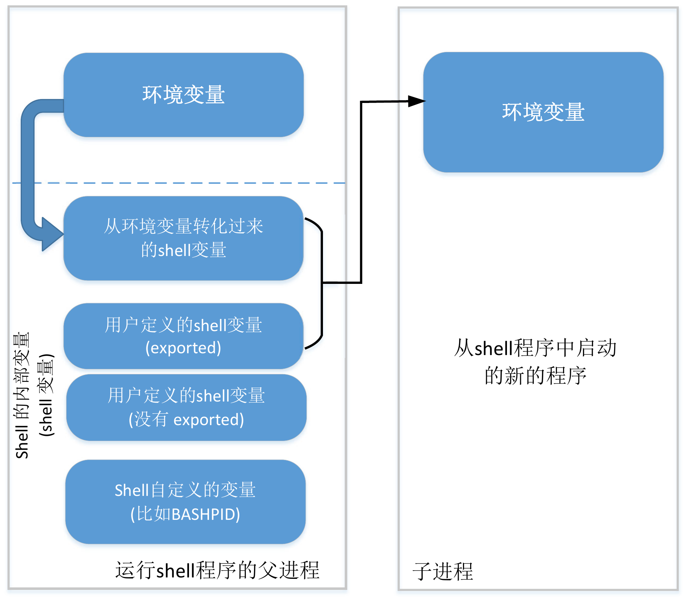
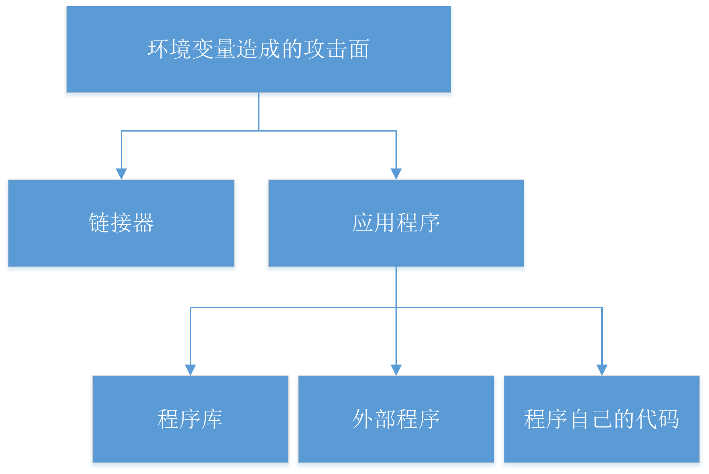
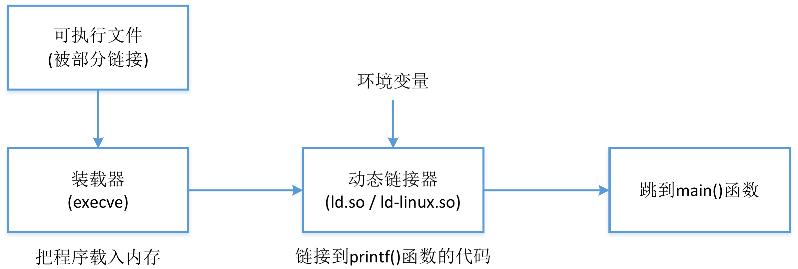
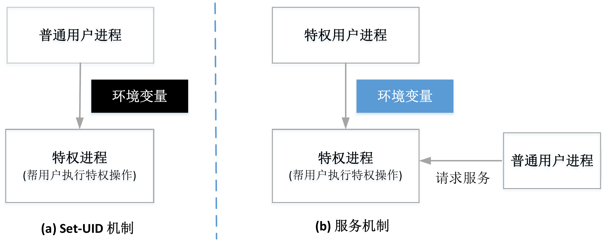

通过环境变量实现攻击¶
1. 核心概念：环境变量是“隐藏的输入”¶
环境变量是存储在进程内存中的键值对，它们可以影响程序的行为。对于特权程序而言，它们是极其危险的隐式输入，因为：
- 开发者难以察觉: 很多时候，环境变量是被程序所依赖的库函数、动态链接器或外部程序使用的，在主程序代码中完全不可见。
- 缺乏校验: 由于开发者意识不到这些输入的存在，他们通常不会对其进行安全校验。
- 用户完全可控: 攻击者可以在执行特权程序之前，任意设置或修改环境变量。
1.1 访问环境变量¶
main() 函数的第三个参数指向了环境变量数组。因此，在 main() 中，我们可以使用 envp[] 数组来获取环境变量值。
- 局部变量 envp 只能在 main() 函数中使用
- 环境变量可通过全局变量 environ 访问（指向环境变量数组），更推荐
- 程序也可以用 getenv(var_name) 函数来获取一个具体的环境变量的值。这个函数实际上是在 environ 数组中搜索指定环境变量的值。程序也可以使用 putenv(), setenv(), 和 unsetenv() 来分别增加、修改和删除环境变量。
1.2 进程获取环境变量方式¶
- fork(): 子进程继承父进程所有环境变量
- execve(): 进程内存被新程序覆盖，所有环境变量丢失，若想传递环境变量需要显式传递
int execve(const char *filename, char *const argv[], char *const envp[])，若不传递环境变量可以设为null
1.3 环境变量在内存中的位置¶
2、3为指针数组，指向1的一个位置。4是main的栈帧，分别指向参数数组、环境变量数组的起始位置。全局变量 environ 指向环境变量数组的起始位置。

Warning
如果环境变量发生变化，标记 ❶ 和 ❷ 的区域空间可能不够，整个环境变量块可能会移到其他位置去（一般来说是堆）。这个时候，全局变量 environ 也需要做相应地修改，但是，main 函数的第三个参数 envp 却不会改变。这样 envp 将一直指向旧的环境变量而非更新后的环境变量。程序可以使用 putenv() 和 setenv() 等函数来改变环境变量。调用这些函数都有可能导致环境变量块位置发生变化。
1.4 Shell变量 vs. 环境变量¶
shell 程序开始时，shell 程序为进程中的每个环境变量创建一个同名的 shell 变量（值也相同），可以通过 shell 变量获取环境变量的值，但对 shell 变量的修改不会影响到同名的环境变量，反之亦然。
- Shell 变量:
- 是 Shell 进程内部维护的变量。
- 修改它不会影响同名的环境变量。
- 只对当前 Shell 生效。
- 环境变量:
- 是进程传递给其子进程的一组变量。
- 由 Shell 进程根据其内部的 Shell 变量创建。
- 只有被
export标记的 Shell 变量，才会成为子进程的环境变量。export LOGNAME3=BOB

Warning
攻击者通过 export 命令，可以将一个自定义的 Shell 变量“注入”到即将执行的 Set-UID 程序的运行环境中。
2. 环境变量带来的攻击面¶

- 链接器：多数操作系统中，使用环境变量查找程序库的位置
- 程序库：大部分程序从外部程序库调用函数，不会对环境变量的值做合法性检查
- 外部程序：外部程序也许会使用一些调用程序本身并未使用的环境变量，因此整个程序的攻击面将被放大，风险也将随之增加。
- 程序自己的代码：代码本身对环境变量做了错误假设
2.1 通过动态链接器 (ld.so)¶
Note
静态链接：连接器将程序代码和包含 printf()等函数的程序库代码及所有依赖的函数都链接起来，编译时加 -static
动态链接：支持动态链接的程序库被称为共享库，.so 后缀，流程如图；可以通过 ldd 查看程序依赖的共享库。动态链接器本身也是共享库。

原理:
动态链接发生在程序运行时，动态链接器 (ld.so) 负责查找并加载程序所需的共享库（.so 文件）。为了方便开发，链接器允许用户通过环境变量指定额外的库搜索路径或预加载库。
关键环境变量:
LD_PRELOAD: 指定一个或多个共享库，链接器会最优先从这些库中加载函数。LD_LIBRARY_PATH: 指定一个目录列表，链接器会在这里查找共享库。
攻击流程:
- 识别目标: 找到一个 Set-UID 程序调用的标准库函数（例如
sleep()）。 - 创建恶意库: 编写一个与目标函数同名但包含恶意代码（如
system("/bin/sh")）的函数，并将其编译成一个共享库（如mylib.so）。 - 注入环境变量: 设置
export LD_PRELOAD=./mylib.so。 - 执行: 运行 Set-UID 程序。链接器会优先加载
mylib.so，当程序调用sleep()时，执行的将是攻击者的恶意代码，并且是以root权限运行。
内置防御机制¶
现代的动态链接器非常智能。当它检测到一个进程是 Set-UID 或 Set-GID 状态时（即真实UID ≠ 有效UID），它会自动忽略
LD_PRELOAD和LD_LIBRARY_PATH这两个危险的环境变量，从而使上述攻击失效。真实世界的失败案例: OS X
dyld¶尽管有上述防御，但新的环境变量仍可能引入漏洞。OS X 10.10 引入了
DYLD_PRINT_TO_FILE变量，允许动态链接器将日志写入指定文件。攻击者可将其设置为/etc/sudoers等受保护文件，并运行su等 Set-UID 程序。dyld以root权限打开该文件，但在su程序降权后忘记关闭，导致文件描述符泄漏，使得普通用户获得了对/etc/sudoers的写权限。
2.2 通过外部程序调用¶
原理: 当 Set-UID 程序需要调用外部命令时，如果实现方式不当，环境变量会严重影响其行为。
不安全方式: system() 函数
- system("cmd") 的本质是启动一个 shell (/bin/sh)，然后让 shell 去执行 cmd。
- 这意味着攻击面扩大到了整个 shell，shell 的行为受到大量环境变量的影响。
经典案例: PATH 环境变量攻击
- 漏洞代码: 一个 Set-UID 程序调用
system("cal")而不是system("/bin/cal")。 - 攻击准备:
- 攻击者在自己的目录下创建一个名为
cal的恶意可执行文件（例如，内容是system("/bin/bash -p")）。 - 攻击者修改
PATH环境变量，将当前目录.置于最前：export PATH=.:$PATH。
- 攻击者在自己的目录下创建一个名为
- 执行: 运行 Set-UID 程序。shell 在根据
PATH搜索cal命令时，会首先找到并执行攻击者的恶意版本，从而以root权限启动一个 shell。
安全方式: execve() 函数
- execve() 是一个直接的系统调用，它不会启动 shell。
- 它严格区分要执行的程序和传递给程序的参数。
- 因此，它不受 PATH 环境变量的影响（除非在代码中显式使用 execvp 等变体），是调用外部程序的首选安全方法。
2.3 其他攻击向量¶
- 通过程序库: 某些库函数自身会使用环境变量。例如，
gettext()函数（用于国际化）使用NLSPATH等变量来定位语言数据库。攻击者可以伪造一个数据库，从而控制printf等函数的格式化字符串，触发格式化字符串漏洞。 - 通过程序自身代码: 程序直接使用
getenv()获取环境变量。如果程序信任getenv("PWD")返回的是一个合法的路径名，但攻击者可以将其设置为一个超长字符串，就可能触发缓冲区溢出漏洞。
3. 防御与架构选择¶
3.1 防御措施¶
- 最小化攻击面: 优先使用
execve()而非system()调用外部程序。 - 校验输入: 绝不信任任何环境变量的内容。在使用前必须进行严格的长度和格式检查。
- 使用安全函数: 使用
secure_getenv()（glibc 提供），它在 Set-UID 环境下会自动返回NULL，强制开发者处理特权场景。
3.2 架构对比：Set-UID vs. 服务 (Daemon)¶

从安全角度看，服务模型远优于 Set-UID 模型。
-
Set-UID 模型:
- 特权进程 (子进程) 由不可信的普通用户进程 (父进程) 启动。
- 环境变量直接从不可信的父进程继承，构成巨大的攻击面。
-
服务/守护进程模型:
- 特权服务由可信的系统进程（如
systemd）在系统启动时创建。 - 其环境变量来源是可信和可控的。
- 普通用户通过定义良好的 IPC (进程间通信) 接口与服务交互，而不是直接启动它。攻击者无法通过环境变量影响服务。
- 特权服务由可信的系统进程（如
结论: 由于环境变量带来的固有风险，现代安全优先的系统（如 Android）已经完全抛弃了 Set-UID 机制，全面转向基于服务的特权模型。